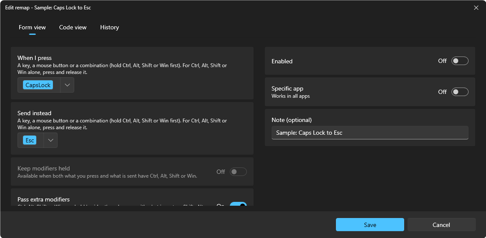

Press a key, a mouse button or a combination and PuppyMacro sends another one instead. Remaps work while PuppyMacro is running, also in the system tray. Select Add remap on the Remap page.

Caps Lock sends Esc in all apps.
When I press: select Set key and press a key or mouse button, or a combination: hold Ctrl, Alt, Shift or Win first, for example Alt+J (Esc cancels). To remap Ctrl, Alt, Shift or Win itself, press it and release it alone, for example the right Alt. The keys are then shown in the accent color: click them to choose others, or use the arrow next to them to choose the side of each Ctrl, Alt, Shift and Win (see Hotkeys).
Send instead: a key, a mouse button or a combination (hold Ctrl, Alt, Shift or Win first), or Ctrl, Alt, Shift or Win alone, chosen the same way. A modifier in what is sent is pressed on the side chosen; with Left or right, the left one.
Specific app: off, the remap works in all apps. Turn it on and choose the app as for a loop: from the list of running apps, with Pick (click a window of the app) or with Browse… (its .exe). The remap then works only while that app is in front. A remap for the app in front wins over one for all apps.
Enabled: the same switch as on the remap's card.
Note (optional): a reminder, shown on the remap's card.
A remap matches exactly: a remap of J does not change Alt+J, and a remap of Alt+J does not change J. Both can exist.
With a combination as the key pressed, for example Alt+J → Left, the app gets only Left: PuppyMacro releases Alt for the app first. While you keep Alt held, the app sees it released, so another key pressed before you let go of Alt arrives without Alt. Pressing J again with Alt still held sends Left again.
Ctrl, Alt, Shift or Win remapped alone (for example the right Alt → Enter) is no longer that modifier while the remap is on: it does not count for combinations or hotkeys. On keyboards where the right Alt is AltGr, it does not type the AltGr characters while it is remapped. A remap of Win alone does not open Start.
Ctrl, Alt, Shift and Win sent by a remap (for example Caps Lock → Ctrl) reach the app, but they do not count for PuppyMacro's own hotkeys: those read only the keys you really press.
Left and right click alone can be remapped only for a specific app.
Code view, at the top of the window, shows the remap as JSON, as it is saved, in a code editor with suggestions and checks; see Macros > Code view. History, next to it, lists its saved versions and restores any of them; see Macros > History.
The Remap page shows the remaps as a List at first, or as a Table or a Grid (the buttons at the end of the search box's row, as on the Loops page). Each remap shows its note (or its keys when it has none), its state (Enabled or Disabled) and its keys, for example CapsLock → Esc or Left AltJ → Left; the table has the columns Note, From, To, Works in and State. In the list and the grid the remaps for a specific app are grouped under its name. Click a remap to open its editor. Its buttons: More options (⋯) with Edit, Duplicate, Export, Move up, Move down and Delete, then the switch that enables or disables it. A duplicate starts disabled, ready to be changed. A remap imported while its hotkey was already taken shows No hotkey yet instead of its keys (point at it: Open it and choose a hotkey to turn it on.); its switch stays off until you open it and give it one. Search and the filter (All remaps, Enabled, Disabled) help with long lists.